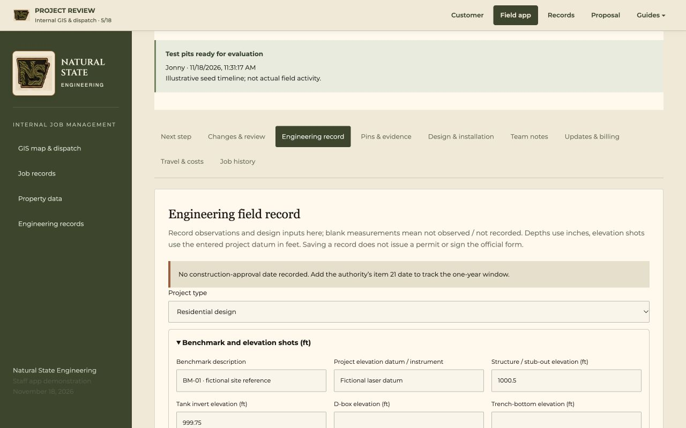
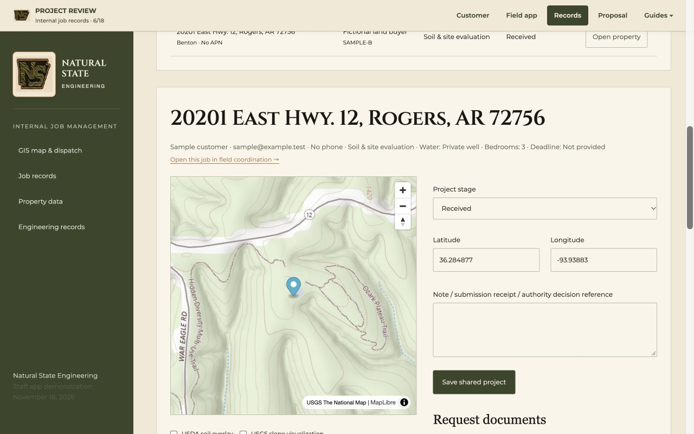

Installer / partner
Create a request with the property, service, access and timing. Follow the field assignment and send design-change or review requests back to engineering.
 NATURAL STATEENGINEERING
NATURAL STATEENGINEERINGBefore the internal tools · What you’ll see next
Tyler, we’re moving from what a customer sees into the workspace we would use to run each assignment. The next screen is the full GIS and dispatch app: its requests, maps, notes, engineering tabs and history are all still there.
Create a request with the property, service, access and timing. Follow the field assignment and send design-change or review requests back to engineering.
Record departure, pit locations, photographs and readiness. After the engineering handoff, record the authorized backfill visit, cleanup and travel details.
Review site features, enter soil and elevation observations, record engineering decisions and retain application and authority references with the job.


Screens from the working preview; job activity and measurements are fictional.
